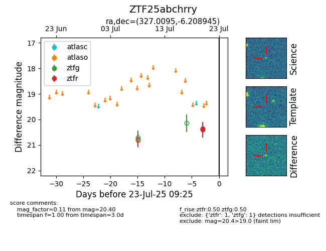

Target ZTF25abchrry at 2025-07-23 11:48, see:
FINK: fink-portal.org/ZTF25abchrry
Lasair: lasair-ztf.lsst.ac.uk/objects/ZTF25abchrry
ALeRCE: alerce.online/object/ZTF25abchrry
alt names
ZTF25abchrry (ztf,fink)
coordinates:
equatorial (ra, dec) = (327.0095,-6.20895)
galactic (l, b) = (50.0355,-41.72780)
photometry
last ztfg=20.40, ztfr=20.35
1 ztfg, 1 ztfr detections
